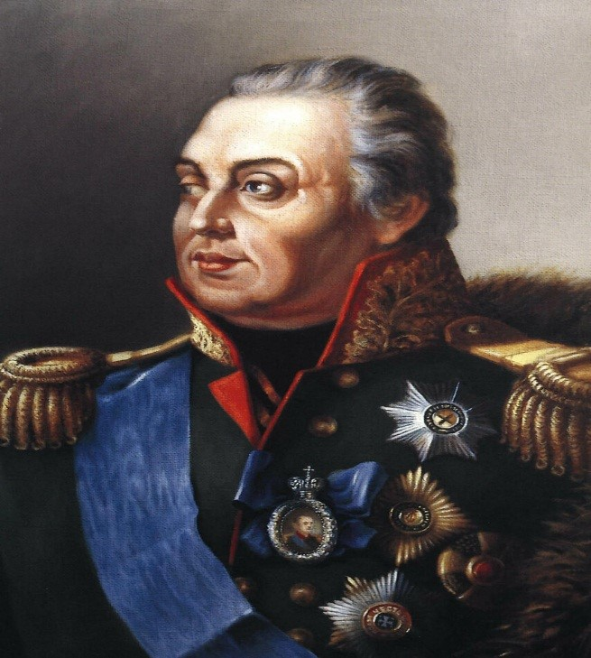
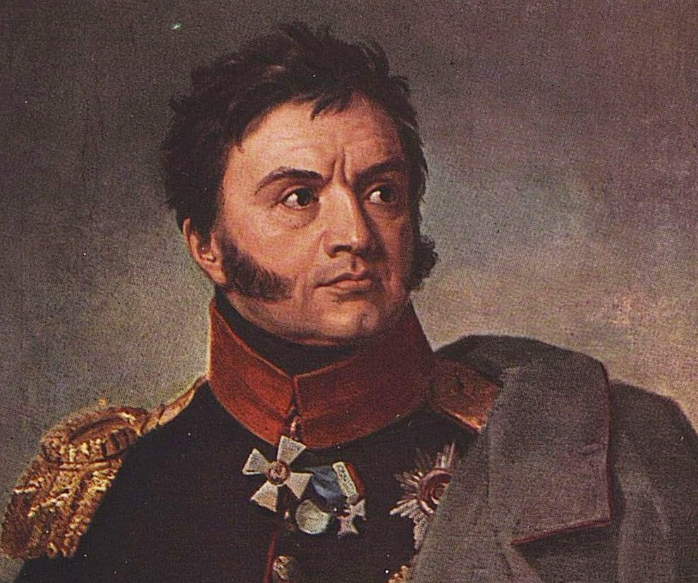
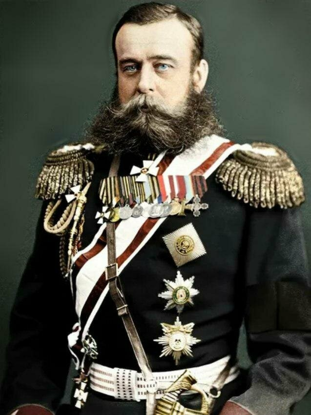
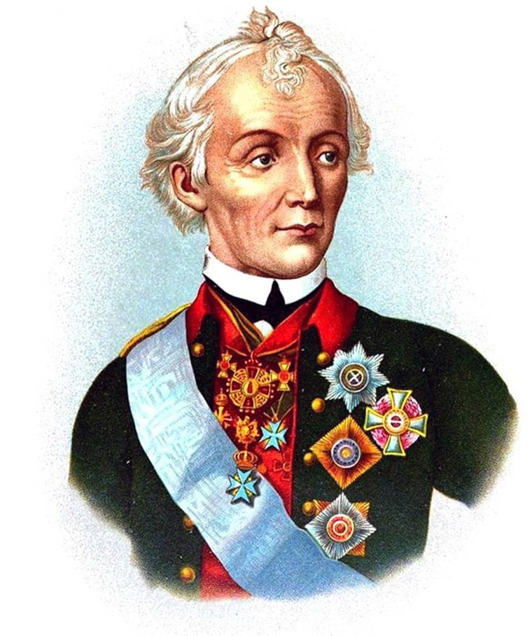

Михаил Илларионович Кутузов
Михаил Илларионович Кутузов (Михаил Илларионович Голенищев-Кутузов-Смоленский) (1745–1813 гг.) – великий полководец, генерал-фельдмаршал, главнокомандующий русской армией во время Отечественной войны 1812 года. Одержал много побед, наиболее знаменит благодаря сражению под Бородином. Во время Отечественной войны 1812 года Александр I назначил Кутузова главнокомандующим всех русских армий, а также удостоил титула светлейшего князя. Во время самых главных в своей жизни Бородинского и Тарутинского сражений, полководец показал великолепную стратегию. Армия Наполеона была уничтожена.
В 1813 году, направляясь с войском через Пруссию, Михаил Илларионович простудился и слег в городке Бунцлау. Ему становилось все хуже и 16 (28) апреля 1813 года полководец Кутузов умер. Похоронили великого военачальника в Казанском соборе в Санкт-Петербурге.

Раевский Николай Николаевич
Раевский Николай Николаевич (1771— 1829), российский генерал от кавалерии (1813 г.). Родился 25 сентября 1771 г. в селе Болтышка Киевской губернии. За тридцать лет безупречной службы участвовал во многих крупнейших сражениях эпохи. После подвига под Салтановкой стал одним из популярнейших генералов русской армии.

Михаил Дмитриевич Скобелев
Михаил Скобелев – выдающийся русский военачальник, генерал-адъютант. Участвовал в Среднеазиатских завоеваниях Российской империи и Русско-турецкой войне 1877-1878 годов. После успешных походов в Киргизию, Коханское ханство, местное население называло его «Белым офицером». Он негативно относился к государству Германия и к немецкому влиянию в России. Скобелев предрек длительную войну с немцами, которая в итоге и случилась.

Александр Васильевич Суворов
Александр Васильевич Суворов (1730–1800 гг.) – великий полководец, князь Италийский, граф Рымникский, генералиссимус, генерал-фельдмаршал. Обладатель всех русских военных орденов того времени, а также многих иностранных наград. В январе 1770 года Суворову было присвоено звание генерал-майора. Александр Васильевич Суворов прославился тем, что мог при помощи тактики и стратегии побеждать превосходящие силы врага. Самыми знаменитыми его победами являются взятие турецких крепостей Очакова и Измаила, а также переход через Альпы, в котором небольшая русская армия громила превосходящие силы врага.